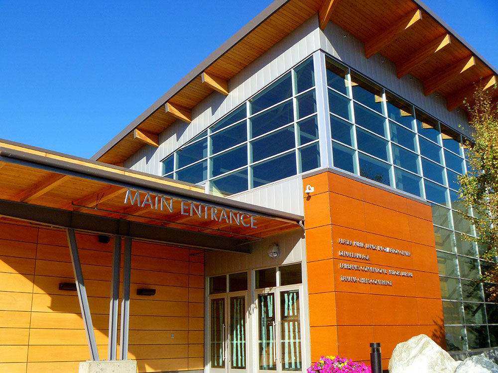
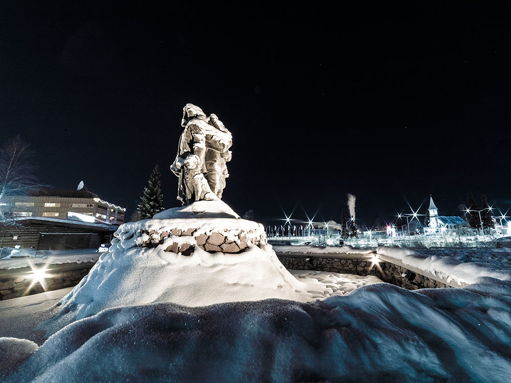
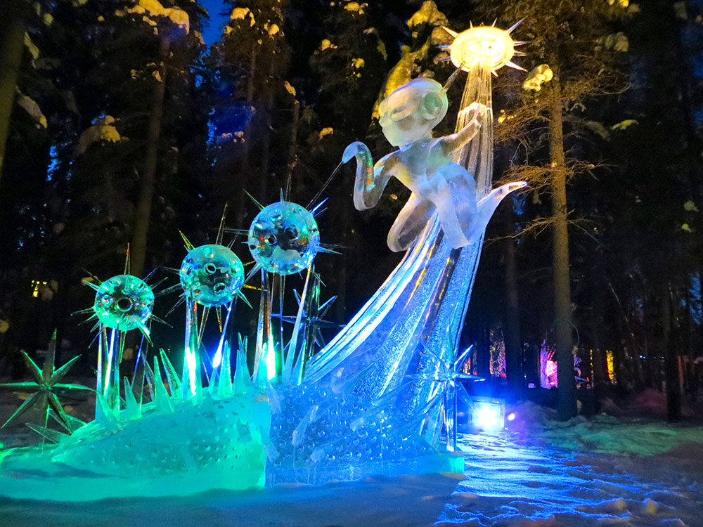
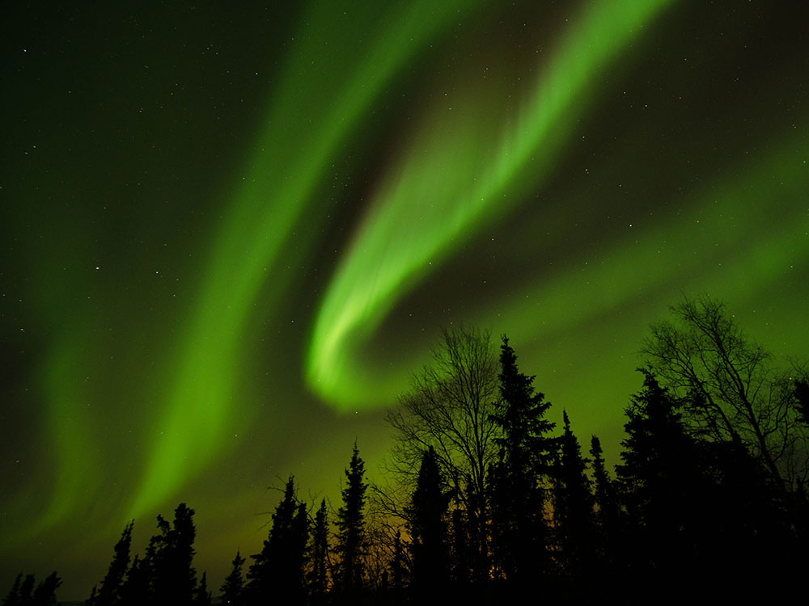

.jpg){kind=link}
Fairbanks Travel Guide
Interior Alaska city known for northern lights viewing, riverfront scenery, gold rush history, and year-round outdoor adventures in extreme seasonal conditions.
Places to See in Fairbanks
-400.jpg)
Quintin Soloviev, CC BY-SA 4.0, via Wikimedia Commons; Image Size Adjusted
Fountainhead Antique Auto Museum
Museum showcasing a world-class collection of pre-World War II automobiles, vintage fashions, and transportation exhibits that trace the evolution of early motoring and American innovation.
Quintin Soloviev, CC BY-SA 4.0, via Wikimedia Commons; Image Size Adjusted
Georgeson Botanical Garden
Botanical research garden featuring northern climate plant collections, walking paths, seasonal blooms, educational exhibits, and landscapes adapted to Alaska's unique growing conditions.
Quintin Soloviev, CC BY-SA 4.0, via Wikimedia Commons; Image Size Adjusted
Gold Daughters
Interactive gold panning attraction where visitors learn prospecting techniques, explore mining exhibits, and search for real Alaska gold in a hands-on educational setting.
Quintin Soloviev, CC BY-SA 4.0, via Wikimedia Commons; Image Size Adjusted
Pioneer Museum
Open-air historical attraction featuring preserved pioneer-era buildings, museums, interpretive exhibits, and cultural displays that showcase the development of Alaska's Interior region.
Quintin Soloviev, CC BY-SA 4.0, via Wikimedia Commons; Image Size Adjusted
Pioneer Park
Historic community park featuring museums, preserved pioneer buildings, cultural exhibits, gardens, art displays, and attractions that celebrate the heritage of Alaska's Interior.
Quintin Soloviev, CC BY-SA 4.0, via Wikimedia Commons; Image Size Adjusted
Running Reindeer Ranch
Family-owned destination offering guided reindeer walks, educational encounters, and opportunities to experience Alaska's wildlife and forest landscapes in an intimate natural setting.
Quintin Soloviev, CC BY-SA 4.0, via Wikimedia Commons; Image Size Adjusted
University of Alaska Museum of the North
Comprehensive natural and cultural history museum featuring world-class exhibits on Alaska's landscapes, wildlife, Indigenous cultures, archaeology, and scientific research.
Quintin Soloviev, CC BY-SA 4.0, via Wikimedia Commons; Image Size Adjusted
World Ice Art Championships (Ice Alaska)
International ice sculpture venue featuring elaborate frozen artworks, championship carving competitions, interactive displays, and seasonal attractions celebrating creativity in a subarctic environment.
How to Get There
From Anchorage (360 mi): Take Parks Hwy (AK-3 N) from Anchorage and follow it north for about 360 miles until reaching Fairbanks.
Overview
Fairbanks is the largest city in Interior Alaska, on the Chena River in the Tanana Valley about 120 miles south of the Arctic Circle, and it is known for the northern lights, the midnight sun, and extreme temperatures that range from more than 90°F in summer to below -40°F in winter. It is the gateway to Alaska's Arctic, the home of the University of Alaska Fairbanks, and the northern end of the Alaska Highway. Under its long winter nights, the city is one of the best places in the world to see the aurora borealis.
Visitors come to Fairbanks for aurora viewing from late August to April, for the midnight sun around the summer solstice, and for attractions such as Pioneer Park and the University of Alaska Museum of the North. They also come for riverboat cruises on the Chena and Tanana Rivers, for hot springs at Chena Hot Springs, and for the World Ice Art Championships each winter.
History
The Athabascan people have lived in the Interior for thousands of years. Fairbanks was founded in 1901 when trader E. T. Barnette, whose steamboat could go no farther, set up a trading post on the Chena River, and the discovery of gold nearby in 1902 sparked a gold rush. The town was named for Senator Charles W. Fairbanks of Indiana, who later became vice president. The Alaska Railroad reached Fairbanks in 1923, and military bases and the Alaska Highway, built in 1942, brought growth in World War II. The Trans-Alaska Pipeline, completed in 1977, runs through the area, and a 1967 flood devastated the city.
Sightseeing and Popular Landmarks
Pioneer Park is a theme park of historic buildings moved from around the city, with the sternwheeler Nenana, and the Gold Daughters and the Gold Dredge 8 offer gold panning. The Fountainhead Antique Auto Museum has vintage cars, and the Running Reindeer Ranch offers walks with reindeer. The Riverboat Discovery cruise on the Chena River is a classic, and the Santa Claus House in nearby North Pole is a favorite stop.
Culture and Museums
The University of Alaska Museum of the North has an exceptional collection of Alaska art and natural history, including the mummified Blue Babe, a 36,000-year-old steppe bison, and the Pioneer Museum shows the gold rush era. Events include the World Ice Art Championships, held in February and March, the Midnight Sun Baseball Game on the summer solstice, and the Fairbanks Summer Arts Festival.
Parks
The Georgeson Botanical Garden shows what grows in the far north, with giant summer vegetables, and Creamer's Field Migratory Waterfowl Refuge has trails and a field full of sandhill cranes in spring and fall. Chena River State Recreation Area and Chena Hot Springs, about 60 miles east, offer hiking, hot spring soaking, and aurora viewing, and Denali National Park is about two hours south.
Seasons and Weather
Fairbanks has a subarctic climate with the widest temperature range of any major Alaska city. Summers are warm, with highs in the 70s and 80s°F and about 22 hours of daylight at the solstice, and winters are very cold, with highs in the single digits and lows below zero, and about 65 inches of snow. The aurora season is from late August to April, and winter visitors should dress for extreme cold.
Things to Do
Explore Alaska's Gateway to the Arctic
Fairbanks is Alaska's second-largest city and serves as the launching point for adventures deep into the Interior and Arctic regions of the state. Known equally for its winter Northern Lights displays and its nearly endless summer daylight, Fairbanks offers a striking mix of frontier history, gold rush heritage, river culture, and outdoor recreation that changes dramatically with the seasons.
Chase the Northern Lights
Fairbanks sits directly beneath the auroral oval, making it one of the most reliable places on Earth to view the Northern Lights, especially during the current solar maximum. Numerous tour operators offer aurora viewing from heated domes, glass-walled lodges, and remote hillside cabins away from city lights, often paired with hot cocoa, photography guidance, and warm places to wait out the show.
Discover Gold Rush and Frontier History
The Morris Thompson Cultural and Visitor Center in downtown Fairbanks introduces visitors to the region's Native cultures and pioneer history through exhibits, film, and knowledgeable staff. The Fountainhead Antique Auto Museum, recently reopened in a new central Fairbanks location, pairs a collection of early-1900s automobiles with period clothing and photography documenting frontier-era travel. Pioneer Park, a 44-acre historical theme park dating to Alaska's 1967 centennial celebration, features gold rush-era buildings and museums that appeal to visitors of all ages.
Cruise the Rivers and Explore the Wild Interior
The Riverboat Discovery, operated by the same family for four generations, offers a narrated sternwheeler cruise on the Chena and Tanana Rivers with a bush pilot flying demonstration and a stop at a recreated Athabascan village. Beyond the city, the Chena River State Recreation Area offers hiking, paddling, and fishing amid rolling hills and alpine tundra, while the Dalton Highway provides a legendary, if rugged, gravel route north toward the Arctic Circle.
Soak, Pan, and Play in the Interior Landscape
Chena Hot Springs, a short drive from town, lets visitors soak in geothermal outdoor pools year-round, even in subzero winter temperatures, and includes an on-site ice museum. Gold panning tours, dog sledding excursions, and float trips down the Chena River round out a destination built for hands-on exploration of Alaska's Interior.
Top Trails
Chena River Trail
Length: Varies, several miles of connected pathway
Elevation Gain: Minimal
Difficulty: Easy
This flat, accessible trail follows the Chena River through downtown Fairbanks, connecting parks, the visitor center, and riverside viewpoints. It's an easy walk or bike ride suitable for all ages and offers a relaxed way to take in the river and local scenery.
Angel Rocks Trail
Length: Approximately 3.5 miles round trip
Elevation Gain: Moderate
Difficulty: Moderate
Located in the Chena River State Recreation Area outside Fairbanks, this popular trail climbs to a cluster of granite tors with sweeping views of the surrounding hills and forest. It's a favorite for hikers seeking a rewarding day trip close to the city, with wildflowers and fall colors adding seasonal appeal.
Getting to Fairbanks
Getting to Fairbanks is straightforward, with options ranging from quick flights to multi-day road trips. The right choice depends on the season, your starting point, and whether you want the journey itself to be part of the experience.
- By Air — Fairbanks International Airport (FAI) is well-connected with direct flights from Anchorage, Seattle, and seasonally from Minneapolis and other hubs. Alaska Airlines is the dominant carrier, with additional seasonal service from Delta, Sun Country, and Condor (from Frankfurt). This is by far the fastest and most popular way in, especially outside the summer road-trip season.
- By Car — From Anchorage, it's about 360 miles via the Parks Highway (Route 3), roughly 6-7 hours, with Denali National Park at the halfway point. From the Lower 48 or Canada, the Alaska Highway (Alcan) runs from Dawson Creek, BC through Canada into Alaska, connecting to the Richardson Highway or Parks Highway — a multi-day journey of 1,500+ miles.
- By Train — The Alaska Railroad's Denali Star runs between Anchorage and Fairbanks, with a stop at Denali, during the summer season (roughly mid-May to mid-September). It's slower than driving but scenic, with glass-domed viewing cars.
- By Bus/Shuttle — Companies like Alaska/Yukon Trails run shuttles between Anchorage, Denali, and Fairbanks, often cheaper than the train and more flexible than renting a car.
Road and rail options are best suited to the summer months, while winter travel can be affected by ice and weather, making flying the more reliable choice for much of the year.
This article uses material from Wikipedia as well as information from official tourism and institutional sources. Key references include Explore Fairbanks, University of Alaska Museum of the North, Pioneer Park, Travel Alaska, Chena Hot Springs Resort, and National Weather Service Fairbanks. Wikipedia material is from the article "Fairbanks, Alaska", and is available under the Creative Commons Attribution-Share-Alike License 3.0.






